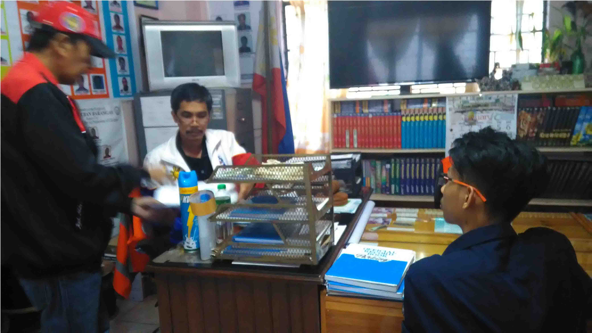
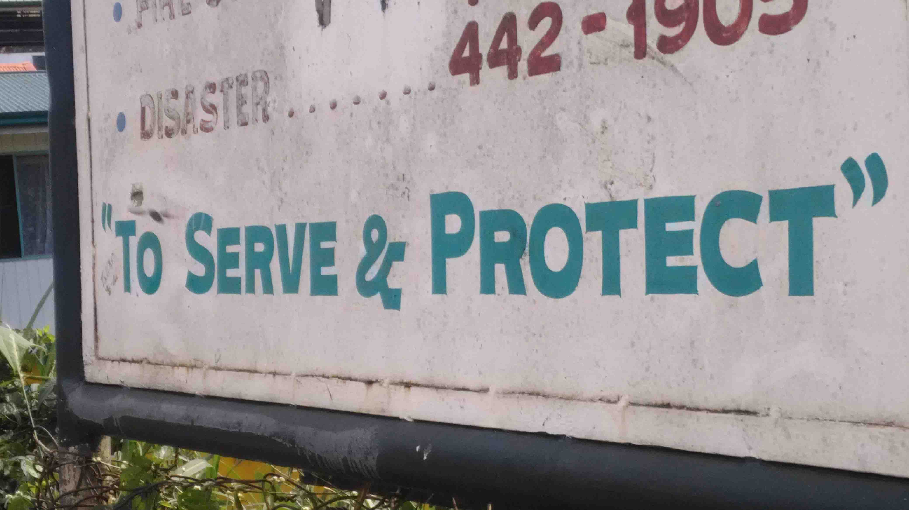

According to Barangay Chairman of New Lucban, John B. Caluza: "Having a good governance in their barangay brings bright future for the people they served. We support all the programs proposed by the government since we have the same aim in Providing people with the kind of service they deserved. As of now the barangay status in having good governance is 90-95 percent".
Barangay New Lucban continue to provide the best service for the people.Since they now what is the worth of practicing good governance